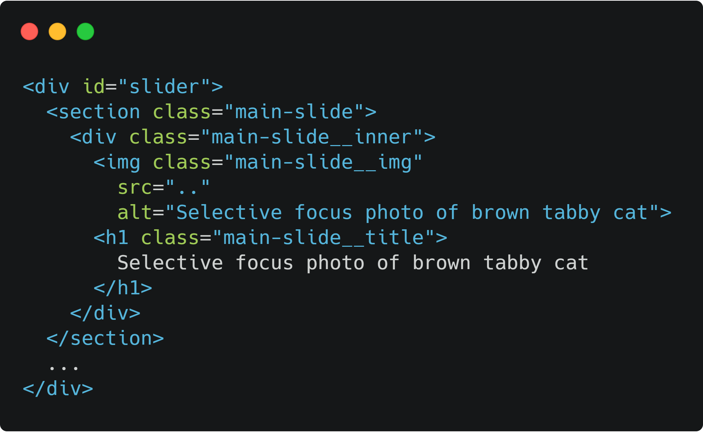
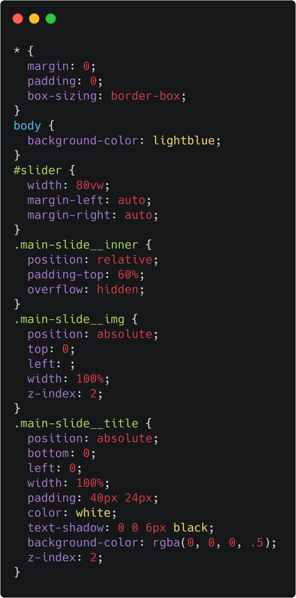
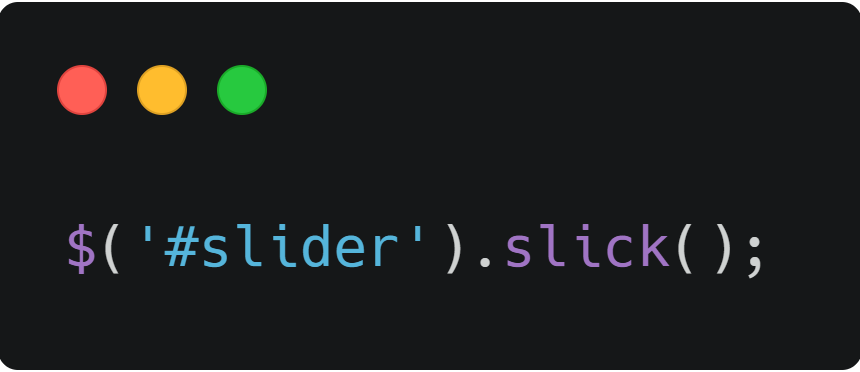
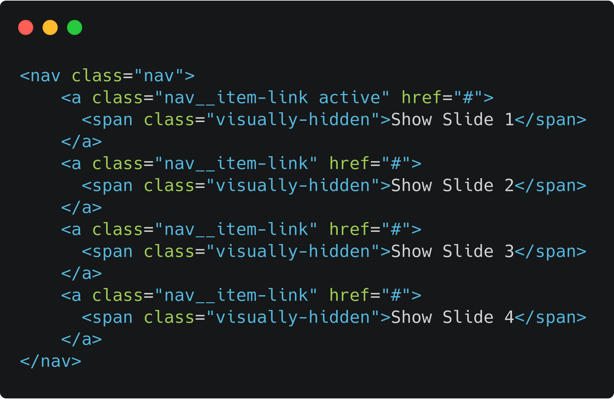
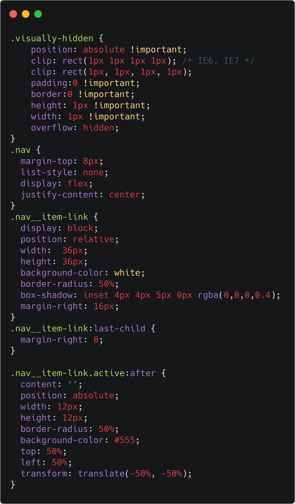
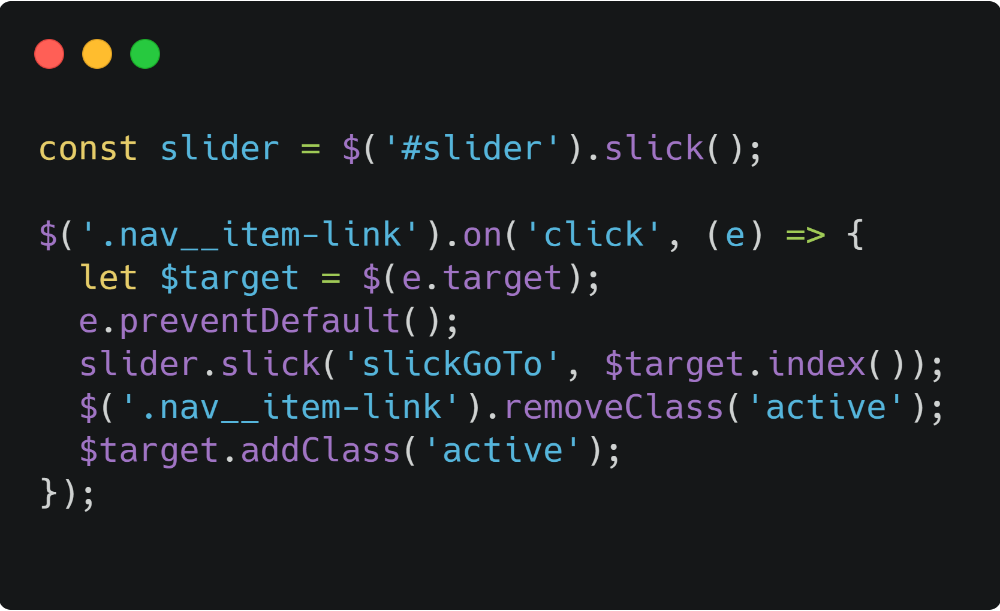
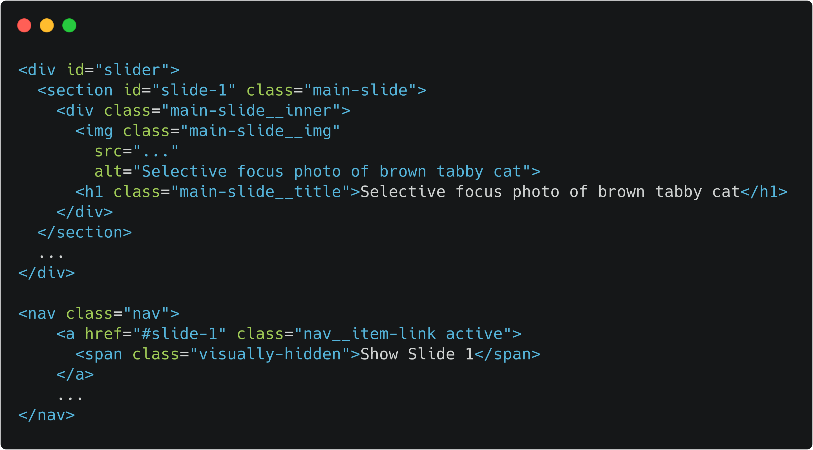

Последние несколько лет среди разработчиков и бизнеса все чаще появляются дискусии о важности покрытия максимального процента аудирории их продукта. Accessability, Graceful Degradation и Progressive Enhancement все сильнее входят в процес разработки продуктов. В этой статье я разберу один из вариантов сохранения работоспособности слайдера на вашем сайте у пользователей с выклюненным JS.
Первым делом давайте создадим слайдер. Я воспользуюсь готовым решением, одим из самых популярных сд=лайднеров на JQuery - Slick Carousel. Подключаем все необходимые ресурсы руководквлюясь инструкцией с официального сайта kenwheeler.github.io/slick.
Далее создадим разметку для слайда и активируем его.
  See the Pen Slider - 1 by Yaroslav (@y_kosovych) on CodePen.
Следующим шагом будет добавление ссылок, которые послужат нам навигацией для сладера и основным инструментом для обеспечания его работы с отключенным JS.
  See the Pen Slider - 2 by Yaroslav (@y_kosovych) on CodePen.
Наш слайдер работает. Теперь выключем JS и посмотрим на результат. (если вы будете смотреть примеры на CodePan, до добавте в конец URL нарамерты ?turn_off_js=true чтобы отключить JS)
При выключенном JS скрипт Slick Carousel не сработывает (что логично), а значит не добавляет свои классы и дополнительные
элементы. Слады выстроились один под одним, согласно блочной модели. Теперь мы может начать писать fallback для клайдера.
В продакшн коде вы можете подключить CSS в
<head> с помошью тега <noscript>
Я же, ввиду ограничений CоdePаn, все стили буду писать в HTML файле все в том же <noscript>.
И первое, что я сделаю, так это с помошью абсолютного позиционирования расположу все слайды друг за другом, сделаю ссылки
навигации видимими.
Следующим шагом нужно добавить для каждого слайда ID и ссылки навигации сделать якорями на соответствующие слайды.

А теперь (следите за руками) c помошью псевдокласса :target
(посмотреть)
мы будем отображать нужный нам слайд, пока все остальные будут скрыты. А так же по
уполчанию первый сладер всегда будет виден.
Вот и все, наш сладер assesible и работает без JS :)